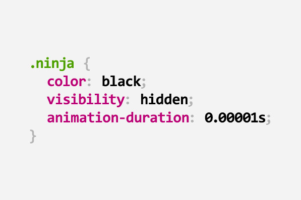

00. Link - Replacing jQuery With Vue.js: No Build Step Necessary
01. Link - What’s New in HTML 5.2?
02. Link - The new (and old) CSS units you've never heard about
03. Link - A curated collection of useful CSS snippets you can understand in 30 seconds or less.
04. Link - Creating and filling Arrays of arbitrary lengths in JavaScript
05. Link - The Chronicles of JavaScript Objects
06. Link - low.js Node.js for Microcontrollers
07. Link - Reading streams via async iteration in Node.js
08. Link - How to use Docker for Node.js development
09. Link - Fancy Function Parameters
10. Link - 5 rzeczy których nie wiecie o JavaScript
11. Link - MKCERT: Valid HTTPS certificates for localhost
12. Link - Defensive JavaScript
13. Link - Making Future Interfaces: Algorithmic Layouts
